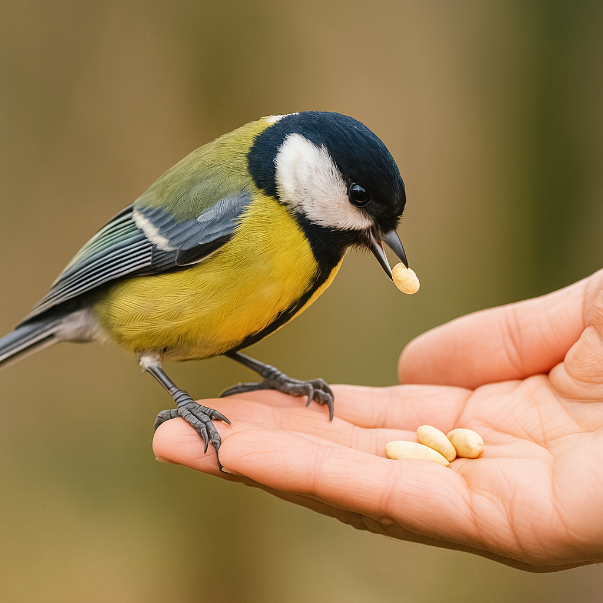
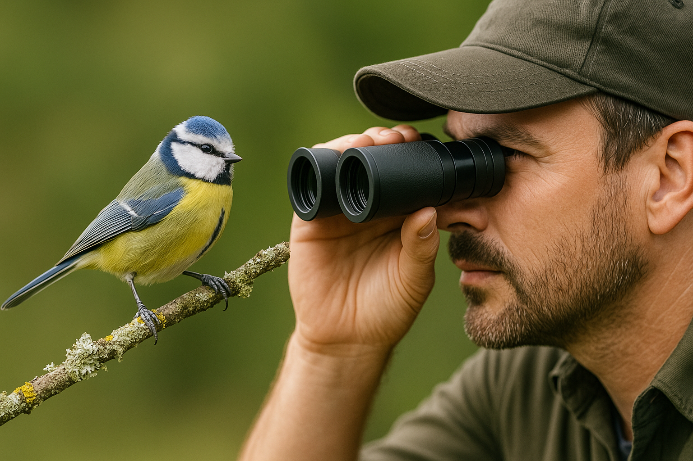
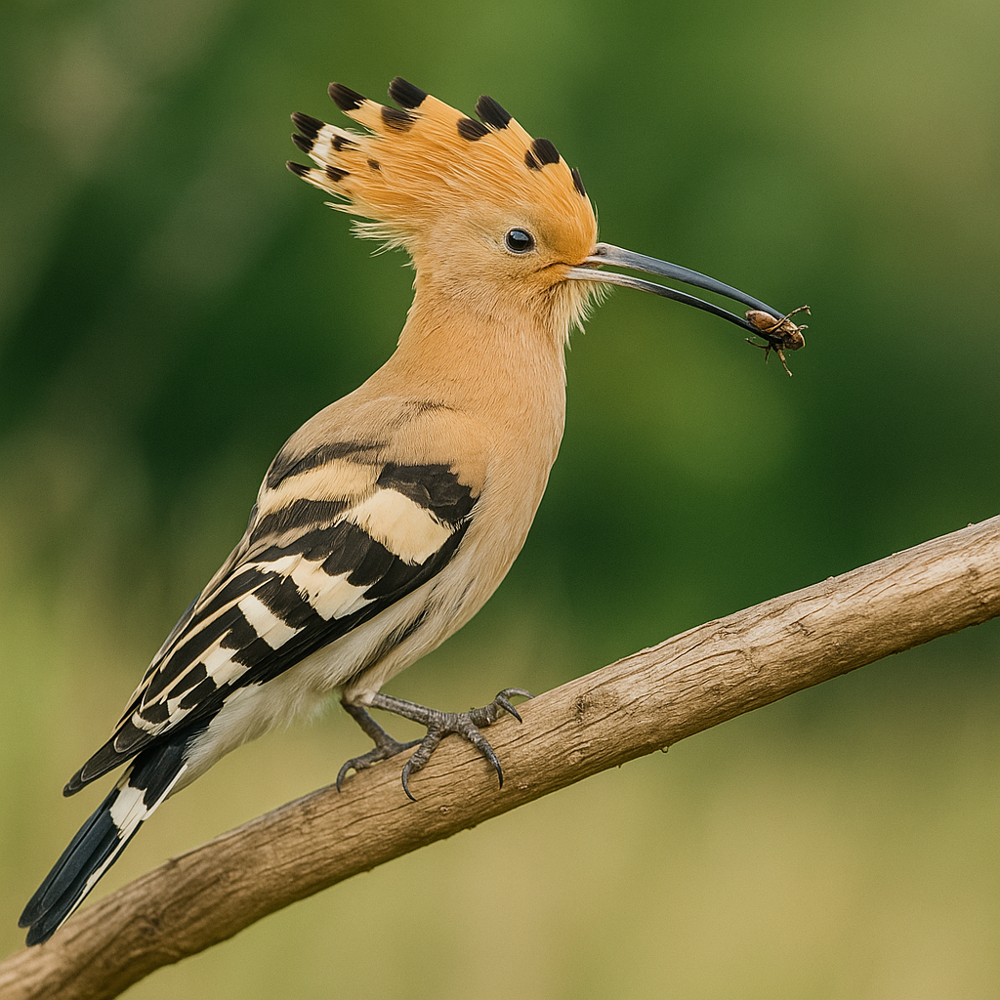

Birdentifier to inteligentna aplikacja, która rozpoznaje ptaki na podstawie przesłanego zdjęcia. Wystarczy jedno kliknięcie, by poznać nazwę, gatunek i otrzymać link do Wikipedii.


Wgraj zdjęcie, a Birdentifier przeanalizuje je za pomocą sztucznej inteligencji. Model porównuje obraz z tysiącami znanych gatunków ptaków i podpowiada najbardziej trafny wynik.
Nasza aplikacja to idealne narzędzie dla pasjonatów przyrody, nauczycieli, fotografów oraz wszystkich, którzy chcą poznać ptaki z najbliższego otoczenia — i tych z dalekich stron świata.
